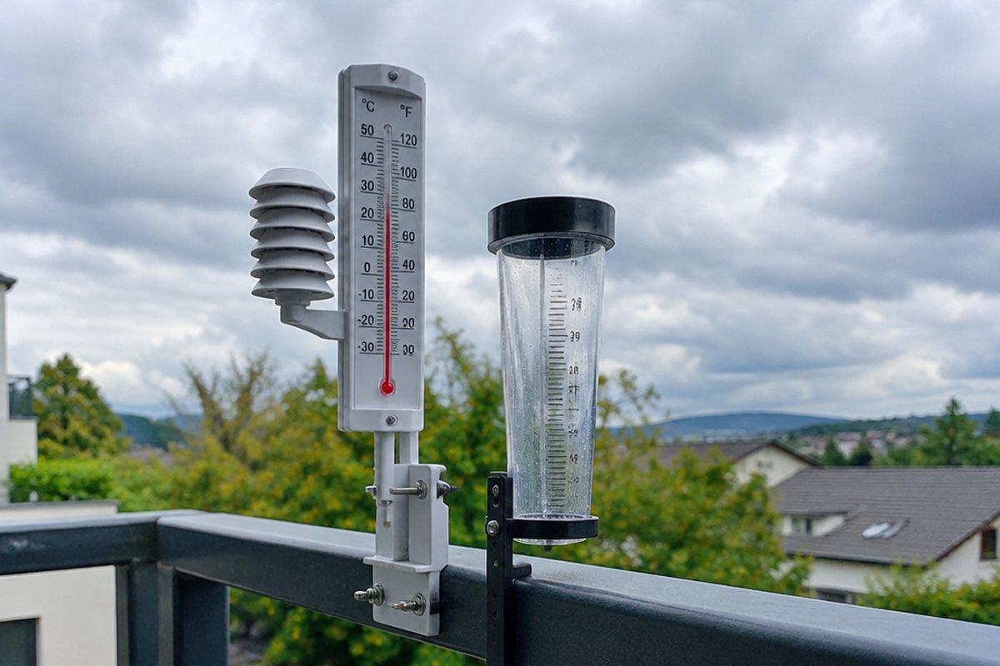

바람은 왜 불고, 구름은 어떻게 생길까?

어떤 날은 빨래가 금방 마르고, 어떤 날은 눅눅해서 잘 안 말라요. 날씨는 왜 날마다 달라질까요?
습도
공기 중에 수증기가 포함된 정도를 '습도'라고 해요. 습도는 건습구 습도계로 잴 수 있어요. 건구 온도와 습구 온도의 차이를 구해 습도표에서 찾으면 돼요.
습도가 높으면 빨래가 잘 마르지 않고 음식이 쉽게 상해요. 습도가 낮으면 피부가 건조해지고 산불이 나기 쉬워요.
건구 온도와 습구 온도의 차이가 클수록 습도가 낮아요.
이슬, 안개, 구름
공기 중의 수증기가 응결하면 여러 모습이 돼요. 밤에 차가워진 풀잎 표면에 수증기가 응결해 물방울로 맺히면 '이슬'이에요.
지표면 가까이의 공기가 차가워져 수증기가 작은 물방울로 떠 있으면 '안개', 공기가 하늘 높이 올라가 차가워져 수증기가 물방울이나 얼음 알갱이로 떠 있으면 '구름'이에요.
구름 속 물방울이 커지고 무거워져 떨어지면 비, 얼음 알갱이가 녹지 않고 떨어지면 눈이 돼요.
고기압과 저기압, 그리고 바람
공기의 무게 때문에 생기는 누르는 힘을 '기압'이라고 해요. 차가운 공기는 따뜻한 공기보다 무거워 기압이 높아요. 주위보다 기압이 높은 곳을 '고기압', 낮은 곳을 '저기압'이라고 해요.
두 지역 사이에 기압 차이가 생기면 공기가 고기압에서 저기압으로 이동하는데, 이것이 '바람'이에요.
바람 빠진 풍선의 입구를 열면 안쪽(높은 압력)의 공기가 바깥으로 빠져나가는 것과 비슷해요.
바닷가의 바람 – 해풍과 육풍
낮에는 육지가 바다보다 빨리 데워져요. 육지 위는 저기압, 바다 위는 고기압이 되어 바다에서 육지로 바람이 부는데, 이것을 '해풍'이라고 해요.
밤에는 육지가 바다보다 빨리 식어서 육지 위가 고기압, 바다 위가 저기압이 돼요. 그래서 육지에서 바다로 '육풍'이 불어요.
계절별 날씨와 공기 덩어리
우리나라는 계절마다 다른 공기 덩어리의 영향을 받아요. 공기 덩어리는 머물던 곳의 온도와 습도 성질을 닮아요.
겨울에는 북서쪽 대륙에서 오는 차갑고 건조한 공기, 여름에는 남동쪽 바다에서 오는 덥고 습한 공기, 봄·가을에는 남서쪽 대륙에서 오는 따뜻하고 건조한 공기의 영향을 받아요.
여름이 후텁지근하고 겨울이 춥고 건조한 까닭은 공기 덩어리 때문이에요.
핵심 낱말
- 습도
- 공기 중에 수증기가 포함된 정도
- 응결
- 수증기가 물방울로 변하는 것
- 기압
- 공기의 무게 때문에 생기는 누르는 힘
- 바람
- 기압 차이로 공기가 고기압에서 저기압으로 이동하는 것
- 해풍
- 낮에 바다에서 육지로 부는 바람
- 육풍
- 밤에 육지에서 바다로 부는 바람
한 줄 정리
- 습도는 공기 중 수증기의 양으로, 우리 생활에 영향을 줘요.
- 수증기가 응결하면 이슬, 안개, 구름이 되고, 구름에서 비와 눈이 내려요.
- 바람은 고기압에서 저기압으로 불며, 바닷가에서는 낮에 해풍, 밤에 육풍이 불어요.